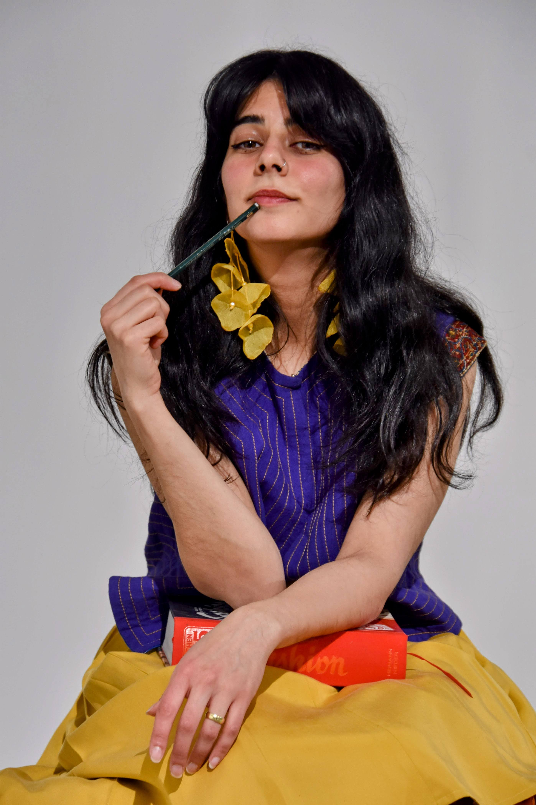
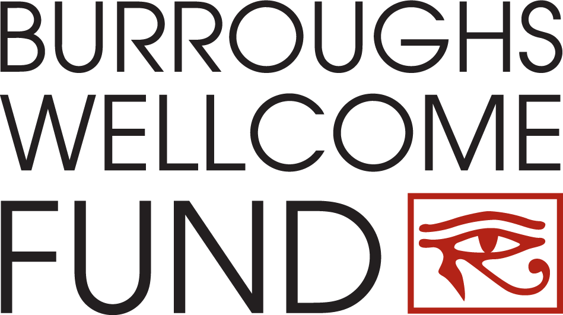
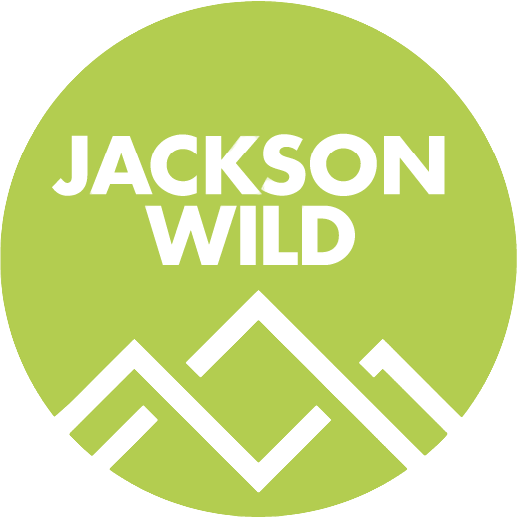
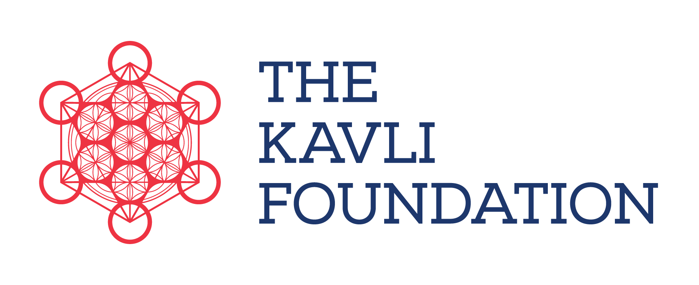

Workshops & Training
Hands-on, experience-based, and entertaining communication training for researchers, students, and institutional teams, from a single workshop to a full cohort program.
Talking Rhubarb Media
I'm Dr. Reyhaneh Maktoufi, a communication strategist and National Geographic Explorer. I help researchers, institutions, and media teams turn complex work into campaigns and stories that build trust.

Dr. Reyhaneh (Rey) Maktoufi is an Iranian-American National Geographic Explorer, published researcher, and science communicator who specializes in helping experts and organizations communicate in ways that actually build trust. She combines research expertise in trust and media with creative storytelling and workshop design. Rey works on popularizing the science of science communication as co-producer/host of PBS|NOVA's Sciencing Out and the podcast SciComm Hotline. Through partnerships with clients like National Geographic, MIT, Princeton, Kavli, and BWF, Rey designs communication strategies, workshops, and digital content that help scientists, storytellers, and institutions tell authentic stories that resonate.
Her background, from designing health communication campaigns and facilitating grief conversations in hospice to research at the Adler Planetarium and documentary production studios, taught her that meaningful communication happens at the intersection of expertise and human presence.
Selected highlights
Hands-on, experience-based, and entertaining communication training for researchers, students, and institutional teams, from a single workshop to a full cohort program.
Communication strategy for organizations to help them clarify messages and stories, design trust-based communication campaigns, and measure their impact.
Talks, keynotes and panels on the science of science communication, trust, curiosity, public engagement and the intersection of art and communictaion (and more!).
Co-creating a podcast on the science of science communication in the format of just two friends gossiping.
Learn moreOriginal science comics and explainers, making communication research concepts visual, memorable, and shareable.
Learn moreCo-producing, hosting, and illustrating short-form science explainers, translating research into visual, story-driven formats.
Learn moreAffiliations
Get in touch
Whether it's a workshop, a media collaboration, or a strategy session, reach out and tell me what you're working on.
Clients





